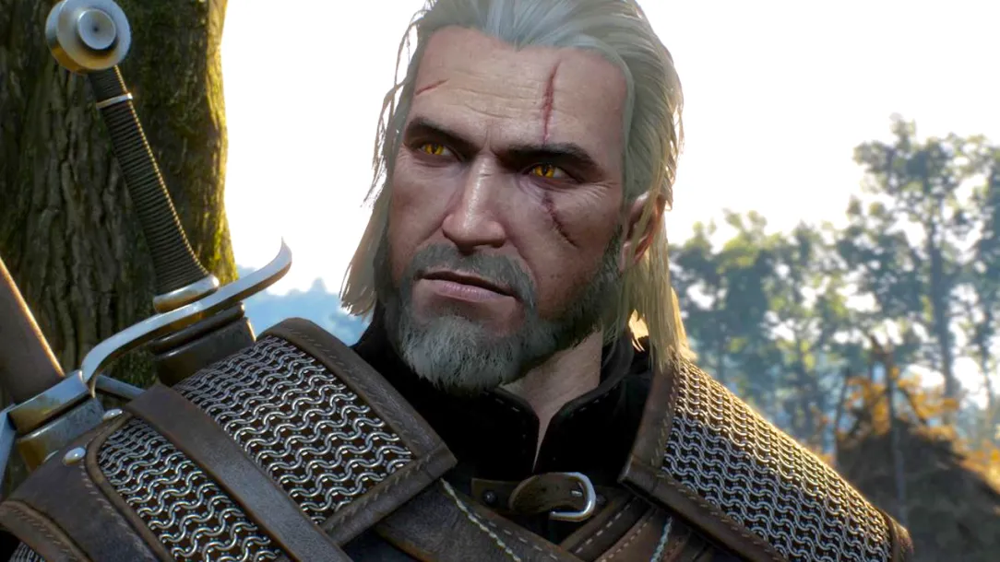
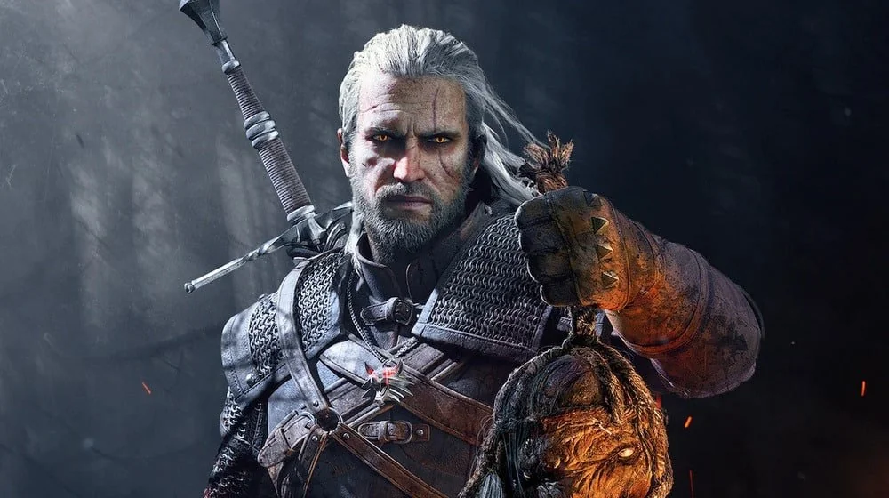
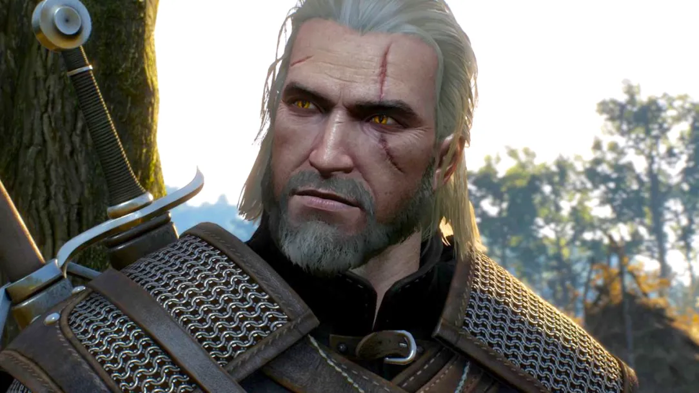
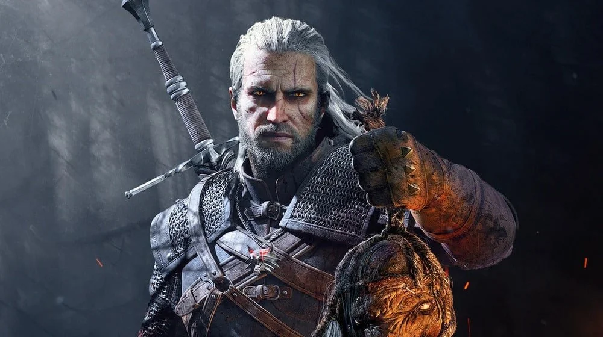

Геральт із Рівії – відомий також за своїми прізвиськами, такими як «Білий вовк» та «М'ясник із Блавікена». Це персонаж, а центральна фігура знаменитої саги, створеної польським письменником Анджеєм Сапковським, а також її численних адаптацій, зокрема серії популярних відеоігор «Відьмак» від студії CD Projekt Red.
За своєю природою, Геральт – це мутант, позбавлений здатності до народження дітей, який пройшов сувору підготовку, щоб стати професійним мисливцем на монстрів. Його мутації надають йому роботу виноградаря й результату мутацій він набув надзвичайні фізичні можливості, здатність застосовувати базові магічні знаки та довговічніший імунітет. Він відомий своїм цинізмом, зважаючись одним із найкращих фехтувальників своєї епохи.
Незважаючи на генетичну нездатність мати власних дітей, Геральт став фактичним батьком для княжни Цірілли з Цінтри, також відомої як Цірі або "Дитя Несподіванки" його призначення.
Особливості його ремесла та зовнішнього вигляду не завадили Геральту мати різноманітні стосунки з жінками. Однак, по-справжньому близькі стосунки він розвинув з двома чарівницями — Йенніфер з Венгерберга та Трісс Мерігольд.
Зміст
- Опис
- Походження
- Участь в літературній Сазі
- Участь в ігровій трилогії
Опис
Зовнішність
Геральт із Рівії – відьмак, чия зовнішність одразу видає його незвичайну природу та суворе ремесло. Він не є привабливим, але має мужній, досконало сформований вигляд. Його тіло підтягнуте й пропорційно складене. Його обличчя є живим свідченням багатьох випробувань та битв, пережитих ним протягом життя. Виразні шрами та впізнаваною рисою Геральта є його волосся. Воно має незвичайний, майже сліпучо-білий, відтінок, що відрізняє його від звичайних мутантів і є наслідком під час випробування Травами у Каер Морхені. Це волосся часто описується як шовковисте, але водночас грубе, і Геральт зазвичай носить його розпущеним або злегка зібраним ззаду, дозволяючи йому спадати на плечі.
Його очі також є унікальною ознакою відьмака. Вони мають котячі зіниці: які здатні звужуватися і розширюватися, адаптуючись до освітлення, подібно до котячих очей. Крім того, вони світяться в темряві. Їхній вигляд, безумовного до яскраво-золотистого, і вони часто світяться в темряві або під впливом емоцій. Цей незвичайний, нелюдський погляд часто викликає у людей тривогу або страх.
Обличчя Геральта вирізняється гострими, виразними рисами і зазвичай має суворий, задумливий або стомлений вираз. Його шкіра зазвичай бліда або сіра, що пов'язано з мутаціями. Інколи на ній можна бачити і найменшіші шрами (проходить через ліве око і одна його точна половина схожою на адаптаціях, це символ його нелюдського життя). Ці шрами не псують його обличчя, а надають йому додаткової жорсткості та свідчать про його досвід.
Статура Геральта — це струнка, але надзвичайно мускулиста і жилава фігура, виточена роками тренувань та постійних фізичних навантажень. Він не виглядає громіздким або надмірно накачаним, але кожен його рух видає неймовірну силу, швидкість та точність, які дозволяють йому бути смертоносним воїном. Доповнює образ Геральта його типочний одяг та спорядження. Зазвичай він носить практичну, зносостійку, часто темну шкіряну броню, призначену для захисту та свободи рухів. За спиною у нього завжди висить два мечі: сталевий – для боротьби з людьми й дикими звірами, та срібний – спеціально для чудовиськ. Ця у нього незмінна відзнака відьмацької медальону у вигляді голови вовка, яка вібрує поблизу магії та чудовиськ.
Характер
Складна і суперечлива особистість, відьмак позначений цинізмом та втомою від світу. Його професія мисливця на чудовиськ і постійні зіткнення з жорстокістю, як монстрів, так і людей, зробили його стриманим, прагматичним і прагматичним. Відьмак часто не прагне втручатися у політичні чи соціальні конфлікти, якщо вони безпосередньо не стосуються його справ. Проте, під цією суворою зовнішністю приховується сильне почуття справедливості та глибока емпатія. Попри завісу відстороненості, Геральт і відьмак він дуже обережно піклується у відношенні до тих, кого любить: Йенніфер, Цірі та своїм друзям. Він готовий ризикувати власним життям заради захисту невинних і часто вступає в боротьбу з кричущою несправедливістю, навіть якщо це суперечить його відьмачому нейтралітету.
У його вдачі поєднується схильність до самотності та прагнення знайти своє місце у світі, глибока мудрість та гострий, часто сухий гумор. Відьмак – це не просто машина для вбивства чудовиськ, а філософ-одинак, що постійно перебуває у внутрішній боротьбі зі своїми емоціями та моральними дилемами.
Походження
Геральт не народився відьмаком. Його справжнє ім'я достеменно невідоме, адже був переданий до Каер Морхена, твердині Школи Вовка, ще в дитинстві. Він став так званим "Дитям-Несподіванки" – дитиною, обіцяною відьмаку за Законом Несподіванки (коли відьмак просить в нагороду те, чого замовник не очікує знайти вдома, а виявляється, що це новонароджена дитина). Цей звичай був одним із джерел поповнення лав відьмаків.
У стінах Каер Морхена Геральт пройшов жорстокі мутації, відомі як Випробування Травами. Це був вкрай болючий і смертельний небезпечний процес, який вижили лише одиниці з сотні дітей. Ці мутації наділили його надлюдською силою, швидкістю, рефлексами, пришвидшеним зціленням, уповільненим старінням та посиленими чуттями. Однак, вони також мали незвичайний побічний ефект (як і більшість відьмаків) став безплідним, а його волосся набуло характерного білого кольору, хоча він і не було виділено.
Після успішного проходження Випробування він піддавався багаторічним і виснажливим тренуванням під керівництвом Весеміра та інших відьмаків, опановуючи мистецтво фехтування, знанням про чудовиськ та основи магії (Знаки).
Попри це, в Рівії, Геральт обрав собі сам, щоб відчувати більше переважно та професійно у своїй справі – полюванні на монстрів за гроші. Він навіть намагався говорити з рівійським діалектом. Його ім’я, заслуги та хоробрість його було офіційно посвячено в лицарі королевою Мев з Лірії та Рівії, що формалізувало його самопроголошений титул.
Участь в літературній Сазі
Геральт є центральним персонажем серії романів та оповідань Анджея Сапковського, що лягли в основу всієї франшизи. Сага про відьмака розповідає про його пригоди, пошуки, відносини з Цірі, Йенніфер та іншими ключовими персонажами, а також про складні політичні інтриги та війни у світі.
Участь в ігровій трилогії
Геральт також є головним героєм надзвичайно популярної серії відеоігор від CD Projekt Red. Хоча ігри є продовженням книжкової саги, вони не є канонічними для книжок, але розширюють всесвіт і розповідають нові історії з Геральтом у центрі.
Його зображення в іграх значною мірою відповідає книжковому опису, хоча з деякими візуальними інтерпретаціями. Характер Геральта в іграх залишається вірним його книжковому образу, з його цинізмом, гумором та глибоким почуттям справедливості.
В іграх гравець керує Геральтом, приймаючи рішення, які впливають на сюжет, відносини з персонажами та долю світу. Ігри додали до його образу культові елементи, такі як його два мечі за спиною та медальйон, що вібрує біля чудовиськ.
 


